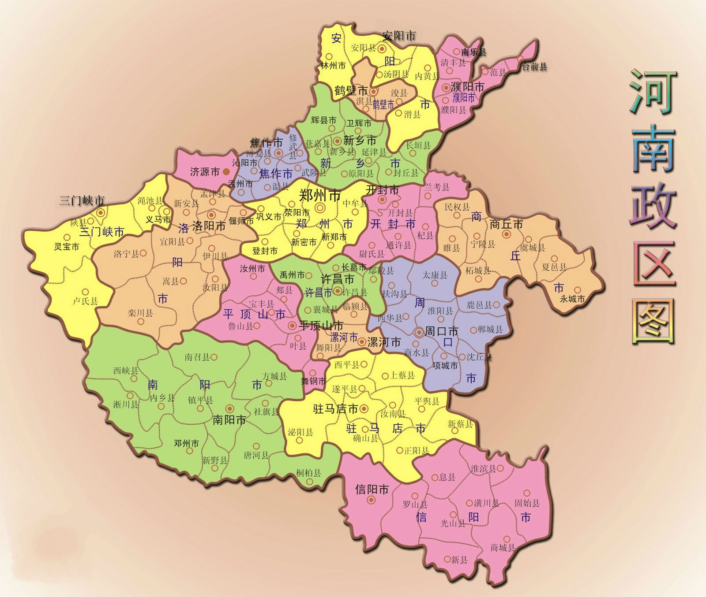
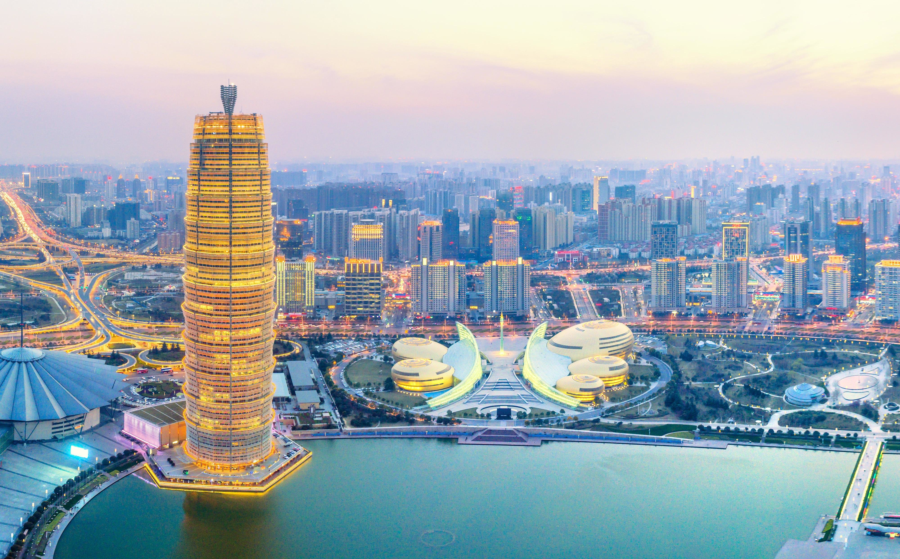

河南省（Henan Province），简称“豫”，中华人民共和国省级行政区，位于中国中东部、黄河中下游地区，总面积16.7万平方千米。 截至2024年8月，河南省辖17个地级市，21个县级市，1个省辖县级行政单位，河南省的省会为郑州市。
河南大部分地处暖温带，南部跨亚热带，属北亚热带向暖温带过渡的大陆性季风气候，具有四季分明、雨热同期、复杂多样和气象灾害频繁的特点，同时还具有自东向西由平原向丘陵山地气候过渡的特征。
河南是中华民族和中华文明的重要发祥地之一，50 万年前就有人类生息和繁衍 。夏朝是中国第一个王朝，开始将天下划分为九州，河南大部分地区属豫州。先后有 20 多个朝代在此建都，中国八大古都中，河南有安阳、开封、郑州、洛阳四个。
文物古迹数量位居全国前列，如 “天地之中” 历史建筑群被列入《世界遗产名录》，还有龙门石窟、白马寺、少林寺、大相国寺等著名景点。民俗文化底蕴深厚，少林武术是河南形象代表，“陈式太极” 是河南文化品牌，此外，信阳毛尖、地黄、山药、菊花、牛膝等也都极具地方特色。
河南历史悠久、文化灿烂，是世界华人宗祖之根、中华文明之源，人杰地灵、名人辈出，是中国姓氏的重要发源地；山川秀美、物产丰饶，是全国农产品主产区和重要的矿产资源大省；区位优越、交通发达，位居天地之中，素有“九州腹地、十省通衢”之称，是承东启西、连南贯北的重要交通枢纽；发展稳健、态势良好，正处于蓄势崛起、攻坚转型的关键阶段，发展活力和后劲不断增强。
